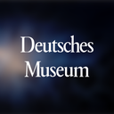
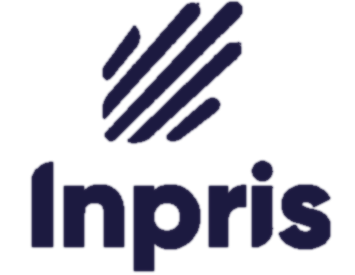

אנו ב-200Apps מאמינים שיד ושם הוא בדיוק המקום שאפליקציה נבנתה עבורו. At 200Apps, we believe Yad Vashem is exactly the place an app is built for.
יד ושם הוא מרכז ההנצחה העולמי לזכר קורבנות השואה, ומגיעים אליו קרוב לשני מיליון מבקרים בשנה.
בין כתליו שמור הארכיון הגדול בעולם לתיעוד השואה, לצד מאגר שמות הנספים, עדויות ניצולים, תצלומים ומסמכים.
אפליקציה יכולה לשאת את הזיכרון הזה אל כף היד של כל אדם, בישראל ובעולם: ללוות את מי שמבקר באתר, ולא פחות מכך להנגיש את העדות, הארכיון ומעשה ההנצחה גם למי שלא יגיע פיזית, בכל מקום ובכל זמן.
Yad Vashem is the world center for the remembrance of the victims of the Holocaust, welcoming close to two million visitors a year.
Within its walls is the world's largest archive of Holocaust documentation, alongside the database of victims' names, survivor testimonies, photographs and documents.
An app can carry this memory into anyone's hand, in Israel and worldwide: accompanying those who visit the site, and no less importantly, bringing the testimony, the archive and the act of remembrance to those who will never visit, anywhere and at any time.
איך אפליקציה משרתת את הזיכרון ואת חוויית הביקור ביד ושםHow an app serves remembrance and the visit at Yad Vashem
כבר השקעתם עמוקות בדיגיטל: שדרוג האתר, אוספים מקוונים, תערוכות וחומרי חינוך. אפליקציה רשמית היא השכבה הטבעית הבאה, שמחברת את כל אלה לרגע האמת של המבקר. You've already invested deeply in digital: an upgraded website, online collections, exhibitions and education resources. An official app is the natural next layer, connecting all of these to the visitor's moment of truth.
היום, הביקור ביד ושם נשען על שילוט פיזי ועל מדריך שמע מושכר, וההתמצאות במתחם הרחב אינה תמיד פשוטה.
הארכיון העצום ומאגר השמות, חיים בעיקר באתר האינטרנט, והגישה אליהם ברגע הביקור מוגבלת.
Today, the visit to Yad Vashem relies on physical signage and a rented audio guide, and finding your way around the vast campus isn't always simple.
The immense archive and the names database live mainly on the website, and access to them at the moment of the visit is limited.
אפליקציה רשמית הופכת את כל זה למלווה אחד, מכובד, בכיס של המבקר.
בתוך המתחם, האפליקציה מציעה מפה, מסלול חכם ומדריך שמע דיגיטלי רב-לשוני, עם הקשר לכל אנדרטה ואתר.
ומחוץ למתחם: הארכיון, העדויות, חיפוש שם והנצחה אישית, זמינים בכל רגע.
An official app turns all of this into one dignified companion, in the visitor's pocket.
On the grounds, the app offers a map, a smart route and a multilingual digital audio guide, with context for every memorial and site.
And beyond the grounds: the archive, the testimonies, name search and personal remembrance, available at any moment.
מלווה ביקור מכובד באתרA dignified companion for the visit
אתר יד ושם רחב וטעון: מוזיאון השואה, היכל השמות, אנדרטת הילדים, בקעת הקהילות ועוד.
אפליקציה נותנת לכל מבקר מלווה עצמאי ומכובד: מפה, מסלול מוצע לפי זמן ועניין, ומדריך שמע דיגיטלי בשפה שלו, עם הקשר לכל אתר.
הביקור נעשה עמוק ורציף יותר, וגם הצפיפות והניווט מתקלים.
The Yad Vashem site is vast and profound: the Holocaust History Museum, the Hall of Names, the Children's Memorial, the Valley of the Communities and more.
An app gives every visitor a dignified, self-guided companion: a map, a suggested route by time and interest, and a digital audio guide in their language, with context for each site.
The visit becomes deeper and more continuous, and crowding and navigation become easier.
הארכיון והעדויות, נגישים לכלThe archive and testimonies, open to all
יד ושם מחזיק את הארכיון הגדול בעולם לתיעוד השואה: עדויות ניצולים, תצלומים, מסמכים ופריטים.
אפליקציה פותחת אותו אל כף היד: לצפות בעדות, לקרוא מסמך, ולהתחקות אחר סיפור, בכל מקום ובכל זמן.
הזיכרון מפסיק להיות נחלת קיר וארכיון, והופך לנגיש לכל אדם.
Yad Vashem holds the world's largest archive of Holocaust documentation: survivor testimonies, photographs, documents and artifacts.
An app opens it into the palm of the hand: to watch a testimony, read a document, and follow a story, anywhere and anytime.
Memory is no longer confined to a wall or an archive, and becomes accessible to everyone.
חיפוש שם והנצחה אישיתName search and personal remembrance
מאגר שמות קורבנות השואה מנציח מיליוני שמות, ומאחורי כל שם, אדם.
אפליקציה מאפשרת לחפש שם, לגלות בן משפחה, למלא דף עד, ולהדליק נר זיכרון, מכל מקום.
מעשה הנצחה אישי ומשמעותי, במיוחד ככל שדור הניצולים הולך ומתמעט.
The Central Database of Shoah Victims' Names commemorates millions of names, and behind each name, a person.
An app makes it possible to search a name, discover a family member, submit a Page of Testimony, and light a memorial candle, from anywhere.
A personal and meaningful act of remembrance, all the more so as the generation of survivors grows smaller.
הנחלת הזיכרון לדור הבאPassing on remembrance to the next generation
שליחות יד ושם היא לזכור וללמד, ובראשה ההנחלה לדור שכבר לא יפגוש ניצולים.
אפליקציה מציעה מסעות לימוד מובנים לתלמידים, למורים ולמשפחות, ומביאה את העדות אל הטלפון שבו הדור הזה חי.
ובעזרת נתונים על היקף ההגעה והמעורבות, אפשר לשרת את השליחות הזו טוב יותר, מתוך ידיעה ולא מתוך השערה.
Yad Vashem's mission is to remember and to teach, and at its heart, to pass memory to a generation that will no longer meet survivors.
An app offers structured learning journeys for students, teachers and families, and brings testimony to the phone where this generation lives.
And with data on reach and engagement, that mission can be served better, from knowledge rather than assumption.
נגישות והכלה, מהיסודAccessibility and inclusion, by design
יד ושם מחויב לנגישות, והמבקרים מגיעים עם צרכים מגוונים.
אפליקציה מרחיבה את זה לכל רגע בביקור: הגדלת טקסט וניגודיות, כתוביות ותמלולים, תיאורי קול, שפה פשוטה, מסלולים שקטים יותר, ותוכן רב-לשוני.
כך הזיכרון נגיש באמת לכל אדם. זה תקן איכות, לא תוספת.
Yad Vashem is committed to accessibility, and visitors arrive with diverse needs.
An app extends this to every moment of the visit: larger text and contrast, captions and transcripts, audio descriptions, plain language, quieter routes, and multilingual content.
So that memory is truly accessible to every person. A standard of quality, not an add-on.
בית אנה פרנק באמסטרדם בנה חוויית מציאות מדומה עטורת פרסים (Webby) שמשחזרת בנאמנות את "הבית הסודי", בשבע שפות כולל עברית, ומאפשרת לאנשים בכל העולם לחוות את הסיפור, גם בלי להגיע פיזית.
המסקנה ברורה: כלי דיגיטלי שמנגיש מרחב היסטורי וסיפור אישי בנאמנות זוכה להכרה בינלאומית. הסטנדרט הוא חוויה, לא אפליקציית מידע גנרית.
The Anne Frank House in Amsterdam built an award-winning (Webby) virtual-reality experience that faithfully recreates the "Secret Annex" in seven languages including Hebrew, letting people around the world experience the story, even without visiting in person.
The lesson is clear: a digital tool that faithfully brings a historical space and a personal story to life earns international recognition. The standard is an experience, not a generic information app.

אבל בין מוסדות זיכרון השואה בעולם כמעט אף אחד עדיין לא החזיק אפליקציה רשמית ומלאה משלו.
כאן יד ושם, עם קרוב לשני מיליון מבקרים בשנה, יכול להיות בין הראשונים, ולהנגיש את זיכרון השואה לא רק למי שמבקר, אלא לכל אדם ובכל מקום.
But among the world's Holocaust memorial institutions almost none has yet had a full, official app of its own.
Here Yad Vashem, with close to two million visitors a year, could be among the first, and make Holocaust remembrance accessible not only to those who visit, but to everyone, everywhere.
200Apps (מאאתיים אפליקציות) בונה מוצרים טכנולוגיים ומלווה חברות, ארגונים ועסקים כבר 12 שנה.
נוסדנו ב-2014 ובנינו מעל 300 מוצרים במודל מקצה-לקצה: מחקר, אפיון ממשק, עיצוב, פיתוח, QA ותחזוקה, עם ניסיון עמוק בתוכן, חינוך וקהילות דיגיטליות.
אנחנו ב-200Apps שותפים יחד אתכם ביצירת מוצר טכנולוגי שמתרגם רעיון למערכת חיה. מוזמנים להתרשם מהעבודות שלנו באתר: 200apps.com
200Apps builds technology products and partners with companies, organizations and businesses, for 12 years.
Founded in 2014, we've built 300+ products end-to-end: research, UX, design, development, QA and maintenance, with deep experience in content, education and digital communities.
At 200Apps we partner with you, together, in creating a technology product that turns an idea into a living system. See our work at: 200apps.com
